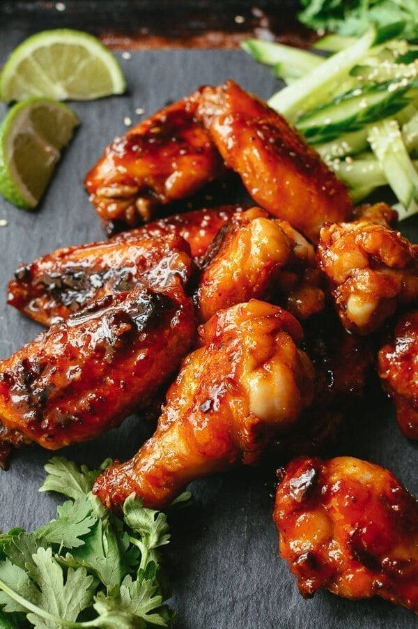

Fish Sauce Chicken Wings

Description
Create the perfect Fish Sauce Chicken Wings with these steps
Ingredients
- 8 garlic cloves
- ⅛ teaspoon salt
- ¼ cup warm water
- ¼-½ cup fish sauce
- ½ cup superfine sugar
- 1½ pounds chicken wings
- ⅔ cup rice flour
- 2 tablespoons cornstarch
- ¼ cup water
- 1-2 teaspoons Thai chili paste
Steps
Notes: Makes 2 dozen wings.
- Make the marinade. Mince the garlic with the salt. We used a garlic press and mixed the salt in. Add the warm water and let sit for 10 minutes. Add the fish sauce and sugar, stirring to dissolve.
- Marinate the wings. Place the chicken wings in a separate large bowl with ½ cup of the fish sauce mixture and toss. Marinate for 4 hours or overnight, setting aside the rest of the fish sauce mixture in the refrigerator.
- Mix with batter. When the wings are done marinating, transfer to a colander, and let drain for 15 minutes. Mix the rice flour and cornstarch together, and toss the wings in the dry mixture until coated.
- Bake the wings. Bake the wings at 475 degrees for 24 minutes, flipping halfway through. Halfway through the cooking time, start to make the glaze.
- Add the sauce. Add ¼ cup of water to the reserved fish sauce mixture and transfer to a hot wok. Add the chili paste. Bring to a boil in a wok, and reduce for 1-2 minutes. Add the wings and toss to coat them in the glaze, about 1 minute.
- Enjoy. Serve with some refreshing sliced cucumbers on the side!